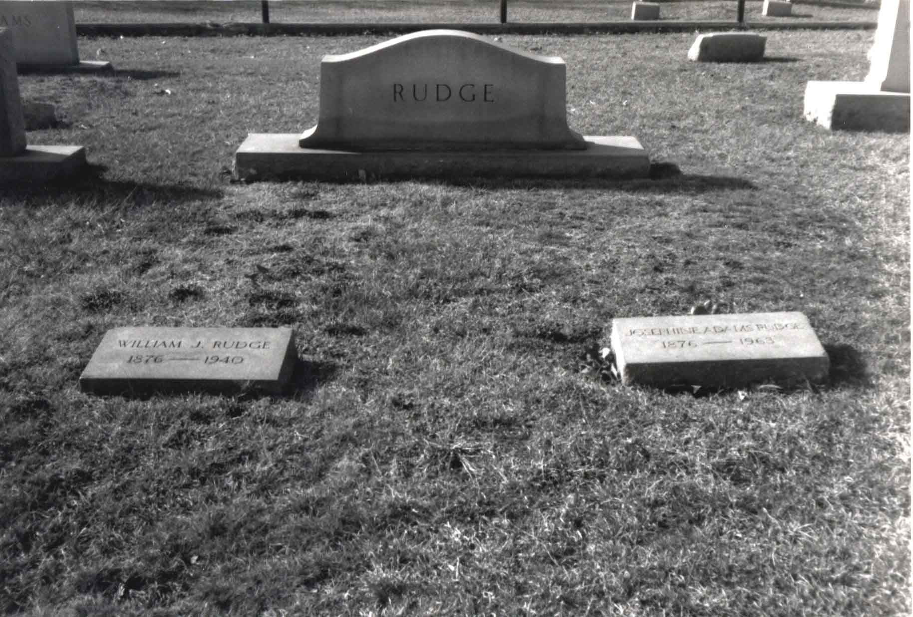

Here's a photograph of the gravestones of William John RUDGE and his wife Ethel Josephine nee ADAMS RUDGE, located in the Monroe City Suncrest Cemetery, Monroe, Union Co. NC.
Site Map
Last updated on 27 Feb 2001